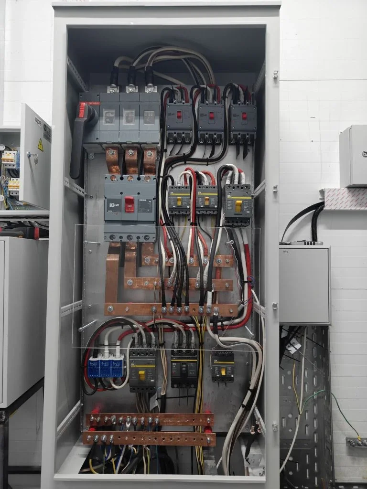

Частный дом / котельная
Электромонтаж котельной в частном доме: что предусмотреть до монтажа
Котельная - один из самых ответственных узлов в частном доме. Здесь питаются котел, насосы, автоматика, датчики, иногда бойлер, вентиляция, теплые полы и резервное питание. Ошибки в электрике котельной могут привести не просто к неудобству, а к остановке отопления.

Какие линии обычно нужны в котельной
Состав линий зависит от оборудования, но чаще всего отдельно рассматривают питание котла, циркуляционных насосов, бойлера, автоматики, вентиляции, розеток обслуживания, датчиков, теплых полов и оборудования водоснабжения.
Если все посадить на одну случайную линию, при неисправности можно потерять сразу несколько важных систем. Поэтому котельную лучше проектировать как отдельный инженерный узел, а не как обычную комнату с парой розеток.
Что важно предусмотреть в щите
- Отдельные автоматы для ключевых групп оборудования.
- Защиту линий с учетом мощности и условий эксплуатации.
- Понятную маркировку, чтобы обслуживающий специалист быстро понял назначение групп.
- Запас места в щите под будущие линии или замену оборудования.
- Возможность резервного питания для критичных потребителей, если это требуется дому.
Резервное питание: когда оно нужно
Для частного дома резервное питание особенно важно, если отключение электричества может остановить отопление, насосы или автоматику. В зависимости от задачи это может быть отдельная линия под ИБП, генератор, АВР или заранее подготовленная схема переключения.
Решение лучше продумывать до монтажа. Переделывать щит и трассы после отделки дороже и сложнее, чем сразу заложить понятный сценарий резервирования.
Что влияет на стоимость электромонтажа котельной
На стоимость влияет количество оборудования, длина кабельных трасс, тип стен и потолков, состав щита, необходимость резервного питания, требования к автоматике и стадия готовности дома.
Если котельная уже смонтирована частично, важно посмотреть фото существующих линий, щита и оборудования. Если дом только строится, лучше сразу согласовать схему вместе с общим электромонтажом коттеджа.
Что прислать для предварительного расчета
Для оценки нужны план котельной, список оборудования, мощности котла, насосов и бойлера, фото места установки щита, информация по резервному питанию и стадия готовности дома.
Если проекта нет, можно начать с фото оборудования и короткого описания: что уже установлено, что нужно подключить, где находится объект и какие сроки важны.
Когда котельную лучше считать вместе с домом
Если частный дом или коттедж еще в ремонте, котельную лучше включать в общий электромонтаж сразу. Тогда можно правильно распределить нагрузки, заложить отдельные линии, предусмотреть резервное питание и оставить запас в щите.
Если котельная уже собрана, мы смотрим фактическое оборудование и подбираем решение без лишних переделок. Для комплексной задачи полезно открыть страницу электромонтаж коттеджа и статью электромонтаж бани в частном доме.
Нужно рассчитать электромонтаж котельной?
Пришлите список оборудования, фото котельной и щита. Подскажем, какие линии и защиту лучше предусмотреть до монтажа.
Оставить заявку